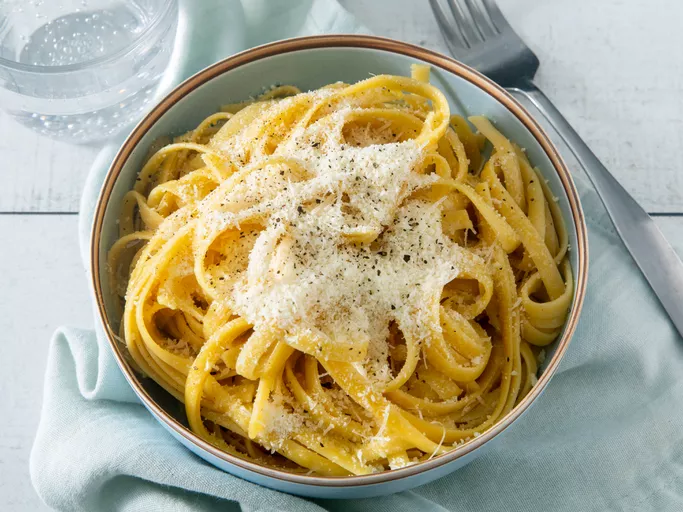

Index
Butter Noodles

Description
This is a very simple recipe and one of my favorites, mainly because you don't need too many ingredients! One should always have butter or pasta on hand. Preferably both at once.
Ingredients
- Butter
- Your preferred pasta or noodle
- Salt and pepper
Steps
- Cook noodles according to directions on the package.
- As noodles are finishing up, melt butter in a pan over low heat.
- Add pasta to melted butter and toss.
- Top with salt and pepper to taste.